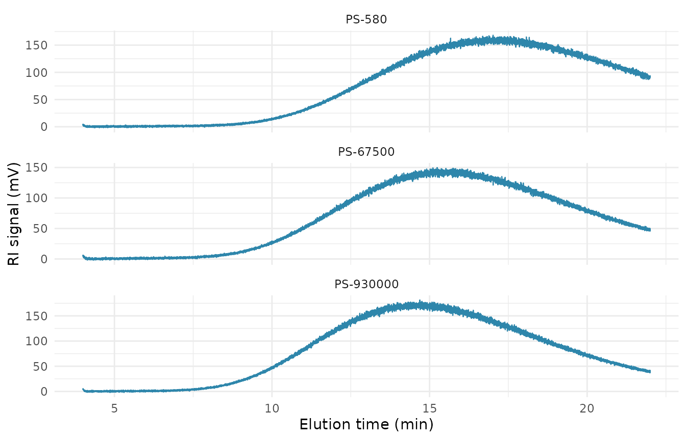
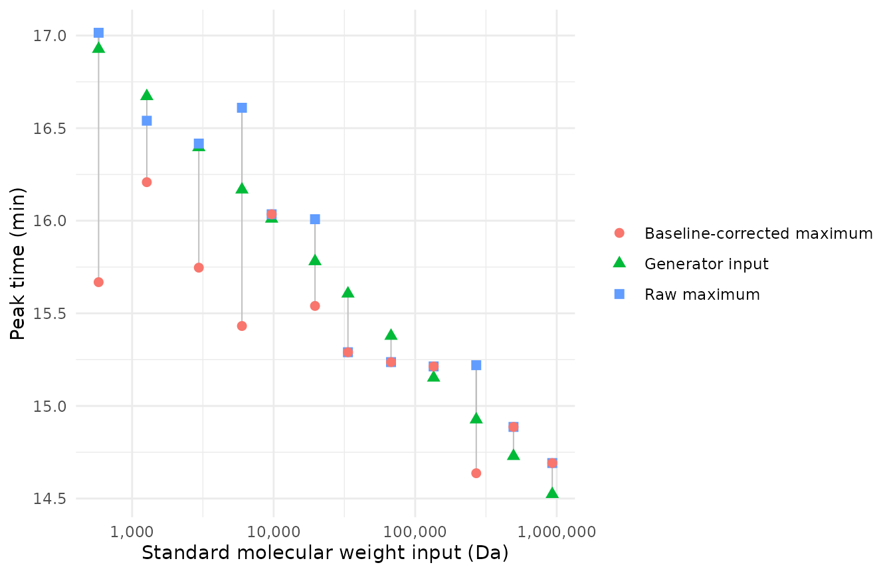
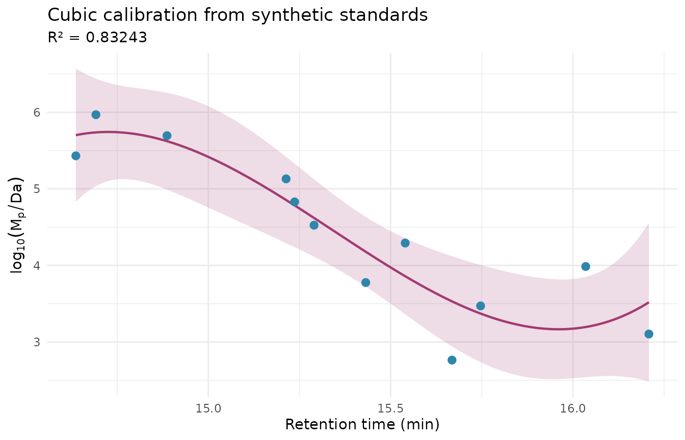
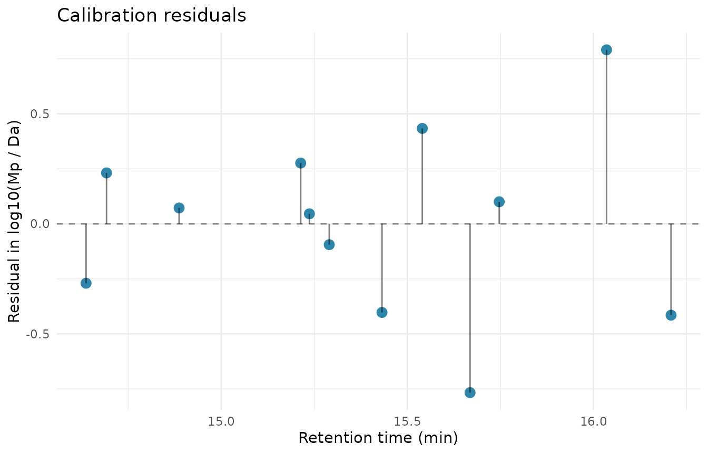
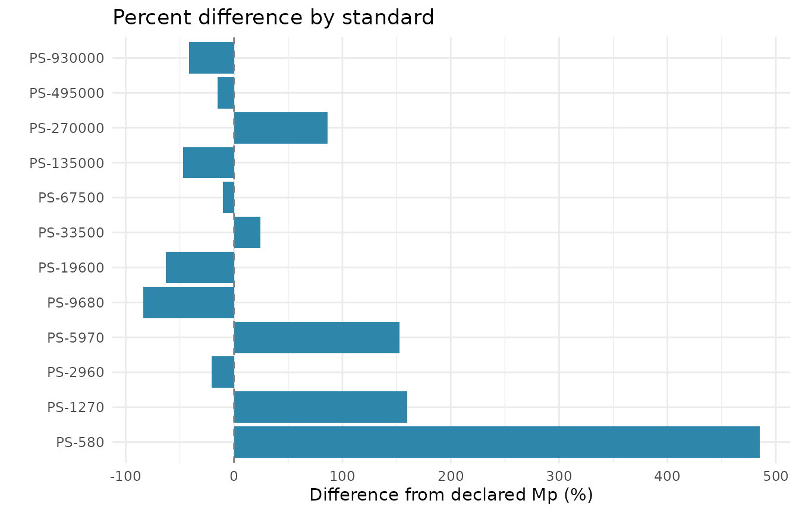
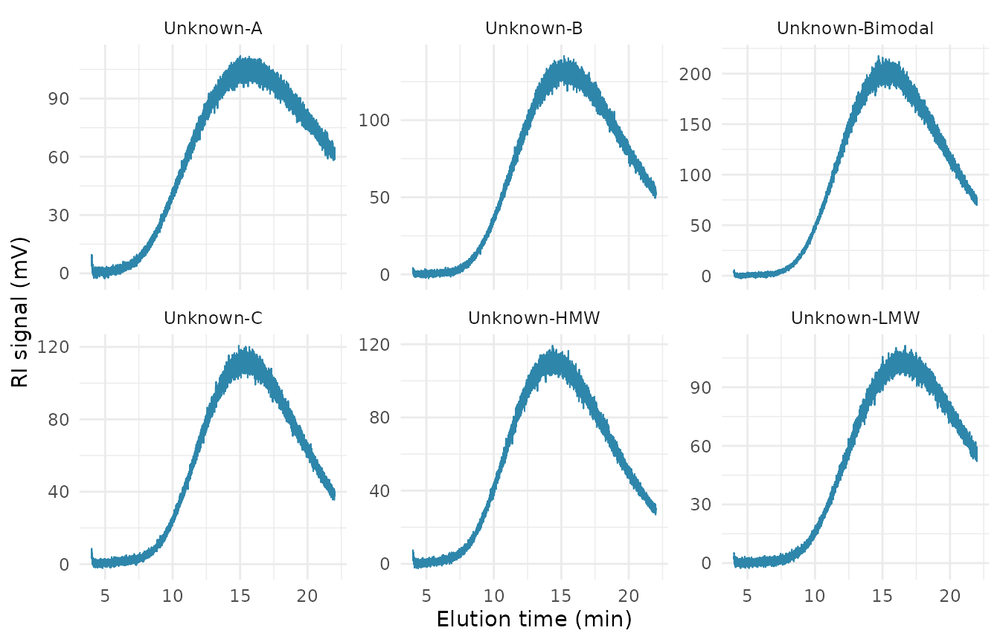
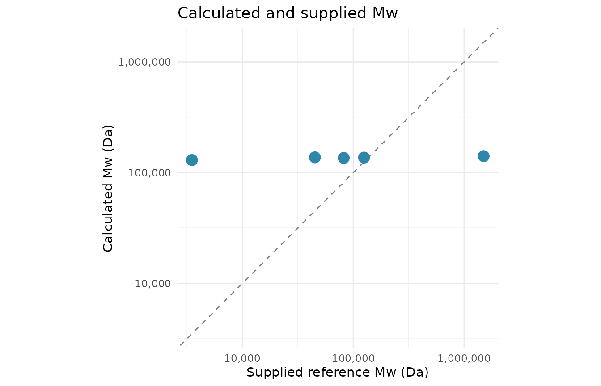
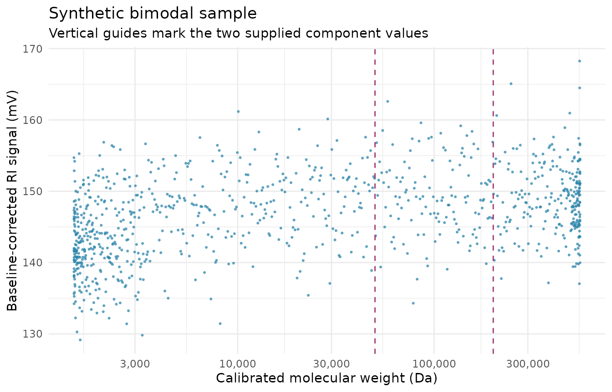

Tutorial: Conventional Calibration from Raw Data
Source:vignettes/tutorial-conventional-calibration.Rmd
tutorial-conventional-calibration.RmdWhat you’ll learn
This tutorial uses the package’s synthetic raw standards and unknown-sample datasets to show how to process signals, fit and inspect a conventional calibration, save it, and apply it to other samples. The shipped values support a reproducible example; they do not qualify an instrument or method.
Prerequisites
- Basic R knowledge (data frames, pipes)
- Completed the Getting Started tutorial
- Understanding of what SEC/GPC does (separates polymers by size)
Example workflow
The first part processes twelve synthetic polystyrene standards and saves the fitted calibration. The second part applies that calibration to synthetic unknown chromatograms and compares calculated averages with the generator-assigned values in the example dataset.
Setup
library(measure)
#> Loading required package: recipes
#> Loading required package: dplyr
#>
#> Attaching package: 'dplyr'
#> The following objects are masked from 'package:stats':
#>
#> filter, lag
#> The following objects are masked from 'package:base':
#>
#> intersect, setdiff, setequal, union
#>
#> Attaching package: 'recipes'
#> The following object is masked from 'package:stats':
#>
#> step
library(measure.sec)
library(recipes)
library(dplyr)
library(tidyr)
library(ggplot2)Build the calibration
Load raw standard data
The package includes sec_raw_standards, a synthetic
tutorial dataset with twelve polystyrene standard traces. It was
generated with noise, baseline drift, and injection artifacts to
resemble features found in raw exports; it is not instrument data.
This example has three different kinds of values. mp is
the molecular-weight input used by the generator to place a standard
peak. The generator’s declared retention-time convention is
19 - 0.75 * log10(mp); it is a construction parameter, not
a measurement. The raw maximum and the maximum after baseline correction
are observations extracted from the distributed traces. Treating the
generator input as if it were an independently measured peak would hide
the distinction this tutorial is intended to inspect.
data(sec_raw_standards)
# View the structure - this is raw detector output
glimpse(sec_raw_standards)
#> Rows: 129,612
#> Columns: 6
#> $ standard_name <chr> "PS-580", "PS-580", "PS-580", "PS-580", "PS-580", "PS-58…
#> $ mp <dbl> 580, 580, 580, 580, 580, 580, 580, 580, 580, 580, 580, 5…
#> $ log_mp <dbl> 2.763428, 2.763428, 2.763428, 2.763428, 2.763428, 2.7634…
#> $ dispersity <dbl> 1.06, 1.06, 1.06, 1.06, 1.06, 1.06, 1.06, 1.06, 1.06, 1.…
#> $ time_min <dbl> 4.0000, 4.0017, 4.0033, 4.0050, 4.0067, 4.0083, 4.0100, …
#> $ ri_mv <dbl> 3.701, 4.695, 4.264, 3.720, 2.092, 3.448, 3.003, 3.847, …
# View the available standards
sec_raw_standards |>
distinct(standard_name, mp, log_mp, dispersity) |>
arrange(desc(mp)) |>
print(n = 12)
#> # A tibble: 12 × 4
#> standard_name mp log_mp dispersity
#> <chr> <dbl> <dbl> <dbl>
#> 1 PS-930000 930000 5.97 1.02
#> 2 PS-495000 495000 5.69 1.02
#> 3 PS-270000 270000 5.43 1.01
#> 4 PS-135000 135000 5.13 1.01
#> 5 PS-67500 67500 4.83 1.02
#> 6 PS-33500 33500 4.53 1.02
#> 7 PS-19600 19600 4.29 1.02
#> 8 PS-9680 9680 3.99 1.02
#> 9 PS-5970 5970 3.78 1.02
#> 10 PS-2960 2960 3.47 1.03
#> 11 PS-1270 1270 3.10 1.04
#> 12 PS-580 580 2.76 1.06
sec_raw_standards |>
filter(standard_name %in% c("PS-580", "PS-67500", "PS-930000")) |>
arrange(standard_name, time_min) |>
ggplot(aes(time_min, ri_mv)) +
geom_line(color = "#2E86AB", linewidth = 0.4) +
facet_wrap(vars(standard_name), ncol = 1, scales = "free_y") +
labs(
x = "Elution time (min)",
y = "RI signal (mV)"
) +
theme_minimal(base_size = 11)
Three synthetic raw RI traces selected from the standard set to span its molecular-weight range. Each panel uses its own signal range and shows the noise and baseline variation present in the tutorial data.
Notice that:
- Higher MW standards elute earlier (larger molecules excluded from pores)
- Lower MW standards elute later (smaller molecules enter pores)
- There’s visible noise and baseline variation—this is normal for raw data
Process the standards
Before building a calibration curve, we need to:
- Baseline correct each chromatogram
- Find the peak retention time for each standard
# Process each standard separately and find peak retention times
process_standard <- function(std_data) {
std_name <- unique(std_data$standard_name)
mp <- unique(std_data$mp)
raw_peak_idx <- which.max(std_data$ri_mv)
raw_retention_time <- std_data$time_min[[raw_peak_idx]]
generator_retention_time <- 19 - 0.75 * log10(mp)
# Create recipe for baseline correction
rec <- recipe(ri_mv + time_min ~ standard_name, data = std_data) |>
update_role(standard_name, new_role = "id") |>
step_measure_input_long(
ri_mv,
location = vars(time_min),
col_name = "ri"
) |>
step_sec_baseline(measures = "ri")
# Process
processed <- prep(rec) |> bake(new_data = NULL)
# Extract chromatogram data
chrom <- processed$ri[[1]]
# Find peak (maximum signal after baseline correction)
peak_idx <- which.max(chrom$value)
peak_time <- chrom$location[peak_idx]
peak_height <- chrom$value[peak_idx]
tibble(
standard_name = std_name,
mp = mp,
log_mp = log10(mp),
generator_retention_time = generator_retention_time,
raw_retention_time = raw_retention_time,
retention_time = peak_time,
peak_height = peak_height
)
}
# Process all standards
peak_data <- sec_raw_standards |>
group_by(standard_name, mp) |>
group_split() |>
purrr::map(process_standard) |>
bind_rows() |>
arrange(desc(mp))
print(peak_data)
#> # A tibble: 12 × 7
#> standard_name mp log_mp generator_retention_time raw_retention_time
#> <chr> <dbl> <dbl> <dbl> <dbl>
#> 1 PS-930000 930000 5.97 14.5 14.7
#> 2 PS-495000 495000 5.69 14.7 14.9
#> 3 PS-270000 270000 5.43 14.9 15.2
#> 4 PS-135000 135000 5.13 15.2 15.2
#> 5 PS-67500 67500 4.83 15.4 15.2
#> 6 PS-33500 33500 4.53 15.6 15.3
#> 7 PS-19600 19600 4.29 15.8 16.0
#> 8 PS-9680 9680 3.99 16.0 16.0
#> 9 PS-5970 5970 3.78 16.2 16.6
#> 10 PS-2960 2960 3.47 16.4 16.4
#> 11 PS-1270 1270 3.10 16.7 16.5
#> 12 PS-580 580 2.76 16.9 17.0
#> # ℹ 2 more variables: retention_time <dbl>, peak_height <dbl>The following plot keeps the generator target beside the two peak locations actually extracted from each trace. It is a diagnostic of this fixture, not a calibration acceptance plot: noise, drift, peak shape, and the chosen baseline window can move the observed maximum away from the generator input.
apex_comparison <- peak_data |>
select(
standard_name,
mp,
generator_retention_time,
raw_retention_time,
retention_time
) |>
pivot_longer(
cols = c(
generator_retention_time,
raw_retention_time,
retention_time
),
names_to = "source",
values_to = "retention_time"
) |>
mutate(
source = recode(
source,
generator_retention_time = "Generator input",
raw_retention_time = "Raw maximum",
retention_time = "Baseline-corrected maximum"
)
)
ggplot(apex_comparison, aes(mp, retention_time, color = source, shape = source)) +
geom_line(
aes(group = standard_name),
color = "grey75",
linewidth = 0.35,
show.legend = FALSE
) +
geom_point(size = 2.3) +
scale_x_log10(labels = scales::label_comma()) +
labs(
x = "Standard molecular weight input (Da)",
y = "Peak time (min)",
color = NULL,
shape = NULL
) +
theme_minimal(base_size = 11)
Declared generator peak times and two observed maxima for the twelve distributed synthetic standards. The generator time is the input convention; raw and baseline-corrected times are maxima extracted from the shipped traces.
The noiseless peaks elute in the expected order. Two neighboring pairs reverse after noise is added; three reverse after baseline correction. For the 580 Da standard, the raw maximum is at 17.015 minutes and the corrected maximum at 15.668 minutes. The final 5% of this trace still contains, on average, 63% of the noiseless peak height. Subtracting that edge as background changes the shape of the peak. The fixture replay shows the intermediate signals for all twelve standards.
Build the calibration curve
Now we fit a polynomial relationship between retention time and log(MW):
# Prepare calibration data in the required format
cal_data <- peak_data |>
select(standard_name, retention = retention_time, log_mw = log_mp)
ps_cal <- cal_data |> select(retention, log_mw)
# Fit a cubic polynomial for this workflow example
cal_fit <- lm(log_mw ~ poly(retention, 3, raw = TRUE), data = cal_data)
# View fit summary
summary(cal_fit)
#>
#> Call:
#> lm(formula = log_mw ~ poly(retention, 3, raw = TRUE), data = cal_data)
#>
#> Residuals:
#> Min 1Q Median 3Q Max
#> -0.76711 -0.30311 0.05885 0.24252 0.79052
#>
#> Coefficients:
#> Estimate Std. Error t value Pr(>|t|)
#> (Intercept) -9825.163 6164.019 -1.594 0.150
#> poly(retention, 3, raw = TRUE)1 1928.243 1201.114 1.605 0.147
#> poly(retention, 3, raw = TRUE)2 -125.880 77.969 -1.615 0.145
#> poly(retention, 3, raw = TRUE)3 2.735 1.686 1.622 0.143
#>
#> Residual standard error: 0.4956 on 8 degrees of freedom
#> Multiple R-squared: 0.8324, Adjusted R-squared: 0.7696
#> F-statistic: 13.25 on 3 and 8 DF, p-value: 0.001805
# Calculate R-squared
cat("\nCalibration R² =", round(summary(cal_fit)$r.squared, 5), "\n")
#>
#> Calibration R² = 0.83243
cal_pred <- cal_data |>
mutate(
fitted = predict(cal_fit),
residual = log_mw - fitted
)
cal_grid <- tibble(
retention = seq(
min(cal_data$retention),
max(cal_data$retention),
length.out = 200
)
)
curve_interval <- predict(
cal_fit,
newdata = cal_grid,
interval = "confidence",
level = 0.95
)
cal_grid <- bind_cols(cal_grid, as_tibble(curve_interval))
ggplot() +
geom_ribbon(
data = cal_grid,
aes(retention, ymin = lwr, ymax = upr),
fill = "#A23B72",
alpha = 0.18
) +
geom_line(
data = cal_grid,
aes(retention, fit),
color = "#A23B72",
linewidth = 0.8
) +
geom_point(
data = cal_pred,
aes(retention, log_mw),
size = 2.4,
color = "#2E86AB"
) +
labs(
x = "Retention time (min)",
y = expression(log[10](M[p] / Da)),
title = "Cubic calibration from synthetic standards",
subtitle = paste("R² =", round(summary(cal_fit)$r.squared, 5))
) +
theme_minimal(base_size = 11)
Cubic calibration fitted to the peak retention times of the twelve synthetic standards. The shaded band is a 95% confidence interval for the fitted mean curve, not a prediction interval for a future measurement. The curve turns upward near both ends and departs substantially from several points in this example.
This synthetic fit is unsuitable for quantitative use: R-squared is about 0.832, the curve turns upward near both ends, and some standards have large percent differences. The unknown-sample comparison below also shows poor agreement. For an experimental run, inspect the standards and their baseline regions before interpreting any calculated molecular weights.
Review calibration fit
Inspect the residuals for structure and compare predicted molecular
weights with the declared mp inputs for each standard. R²
and RMSE summarize the fit, but neither has a universal acceptance
threshold; set criteria for the method and its intended use.
# Calculate % deviation for each standard
cal_pred <- cal_pred |>
left_join(peak_data |> select(standard_name, mp), by = "standard_name") |>
mutate(
predicted_mp = 10^fitted,
pct_deviation = (predicted_mp - mp) / mp * 100
)
# Residual plot
p1 <- ggplot(cal_pred, aes(retention, residual)) +
geom_hline(yintercept = 0, linetype = "dashed", color = "gray50") +
geom_point(size = 3, color = "#2E86AB") +
geom_segment(aes(xend = retention, yend = 0), alpha = 0.5) +
labs(
x = "Retention time (min)",
y = "Residual in log10(Mp / Da)",
title = "Calibration residuals"
) +
theme_minimal(base_size = 11)
# Percent deviation bar chart
p2 <- ggplot(cal_pred, aes(reorder(standard_name, mp), pct_deviation)) +
geom_col(fill = "#2E86AB") +
geom_hline(yintercept = 0, linetype = "dashed", color = "gray50") +
coord_flip() +
labs(
x = "",
y = "Difference from declared Mp (%)",
title = "Percent difference by standard"
) +
theme_minimal(base_size = 11)
# Display plots
p1
Residuals from the cubic fit at the twelve synthetic standards. The horizontal line marks zero residual.
p2
Percent difference between fitted and declared peak molecular-weight inputs for each synthetic standard. The zero line marks agreement; no acceptance limits are shown.
# Calibration quality summary
cat("=== Calibration Quality Summary ===\n\n")
#> === Calibration Quality Summary ===
cat("R-squared: ", round(summary(cal_fit)$r.squared, 6), "\n")
#> R-squared: 0.832433
cat("Residual Std Err: ", round(summary(cal_fit)$sigma, 4), "log₁₀ MW\n")
#> Residual Std Err: 0.4956 log₁₀ MW
cat("Max |% Deviation|:", round(max(abs(cal_pred$pct_deviation)), 2), "%\n")
#> Max |% Deviation|: 484.94 %
cat("Mean |% Deviation|:", round(mean(abs(cal_pred$pct_deviation)), 2), "%\n")
#> Mean |% Deviation|: 99.12 %
cat("\nCalibration Range:\n")
#>
#> Calibration Range:
cat(" MW: ", format(min(peak_data$mp), big.mark = ","), "to",
format(max(peak_data$mp), big.mark = ","), "Da\n")
#> MW: 580 to 930,000 Da
cat(" Retention: ", round(min(cal_data$retention), 2), "to",
round(max(cal_data$retention), 2), "min\n")
#> Retention: 14.64 to 16.21 minSave the calibration
Save the fitted calibration object so later recipes can reuse it
without fitting again. This example uses a synthetic PS-50K trace to
prepare the step; ps_cal defines the calibration
standards.
data(sec_triple_detect, package = "measure.sec")
calibration_trace <- sec_triple_detect |>
filter(sample_id == "PS-50K")
calibration_recipe <- recipe(
ri_signal + elution_time ~ sample_id,
data = calibration_trace
) |>
update_role(sample_id, new_role = "id") |>
step_measure_input_long(
ri_signal,
location = vars(elution_time),
col_name = "ri"
) |>
step_sec_baseline(measures = "ri") |>
step_sec_conventional_cal(
measures = "ri",
standards = ps_cal,
fit_type = "cubic",
extrapolation = "none"
)
prepped_calibration <- prep(calibration_recipe)
#> Warning: Calibration fit quality is low (R\u00b2 = 0.8324).
#> ℹ Typical calibrations have R\u00b2 > 0.999.
#> Warning: Standard at 15.67 has 484.9% MW deviation.
#> ℹ Consider removing outlier standards or using a different fit type.
# Use a temporary file here; replace it with a managed path in your workflow.
cal_file <- tempfile(fileext = ".rds")
save_sec_calibration(
prepped_calibration,
file = cal_file,
metadata = list(
date = Sys.Date(),
column = "<column-id>",
instrument = "<instrument-id>",
mobile_phase = "<mobile-phase>",
flow_rate = "<flow-rate>",
temperature = "<temperature>"
)
)
#> ✔ Saved cubic calibration to /tmp/RtmpZtf0Uq/file2a537606e51b.rdsInclude the date and method details in the filename or metadata. Follow your method criteria to decide when to repeat calibration.
Apply the calibration
Load a saved calibration
# Load the calibration saved above
cal_saved <- load_sec_calibration(cal_file)
#> ℹ Loaded cubic calibration (R\u00b2 = 0.8324)
# View the metadata
stopifnot(
!is.null(cal_saved$user_metadata$date),
identical(cal_saved$user_metadata$column, "<column-id>")
)
cat("Calibration from:", as.character(cal_saved$user_metadata$date), "\n")
#> Calibration from: 2026-11-19
cat("Column:", cal_saved$user_metadata$column, "\n")
#> Column: <column-id>
cat("Fit type:", cal_saved$fit_type, "\n")
#> Fit type: cubicThe recipes use the saved calibration object. Its retention range also defines the integration window for the averages below.
calibration_range <- range(ps_cal$retention)Load unknown samples
For the five single-main-peak samples, the generator uses
true_mw to place the main peak and
true_dispersity to set its width. It attaches
true_mn and true_mz as labels; the generated
signals do not have to integrate to those values. The bimodal sample has
two assigned component masses.
data(sec_raw_unknowns)
# View the samples
sec_raw_unknowns |>
distinct(
sample_id,
description,
true_mw,
true_mn,
true_mz,
true_dispersity
) |>
print()
#> # A tibble: 6 × 6
#> sample_id description true_mw true_mn true_mz true_dispersity
#> <chr> <chr> <dbl> <dbl> <dbl> <dbl>
#> 1 Unknown-A Broad distribution PM… 45000 22000 85000 2.05
#> 2 Unknown-B Medium dispersity PS-… 125000 95000 165000 1.32
#> 3 Unknown-C Narrow distribution r… 82000 75000 92000 1.09
#> 4 Unknown-Bimodal Bimodal mixture (50K … NA NA NA NA
#> 5 Unknown-HMW Very high MW with agg… 1500000 1200000 1900000 1.25
#> 6 Unknown-LMW Low MW oligomer region 3500 2800 4500 1.25
sec_raw_unknowns |>
arrange(sample_id, time_min) |>
ggplot(aes(time_min, ri_mv)) +
geom_line(color = "#2E86AB", linewidth = 0.35) +
facet_wrap(vars(sample_id), scales = "free_y") +
labs(
x = "Elution time (min)",
y = "RI signal (mV)"
) +
theme_minimal(base_size = 11)
Synthetic raw RI chromatograms for the six generator-defined unknown samples. Each facet has an independent vertical scale so differences in trace shape remain visible.
All six traces run from 4 to 22 minutes. The measured standard maxima span only 14.6367–16.2083 minutes. That interval contains 944 of 10,801 readings per trace (8.7%). It accounts for 19.3%–23.0% of the positive, baseline-corrected signal area, depending on the sample. Read those percentages as detector response inside the window; they do not measure sample recovery.
Analyze an unknown sample
Now we apply our calibration to calculate molecular weights. Each example integrates only the portion within the standards’ retention range; signal outside that range is excluded, so the reported values may not represent the entire sample.
# Process all unknowns at once
# First, let's work with one sample to show the workflow
unknown_a <- sec_raw_unknowns |>
filter(sample_id == "Unknown-A")
# Build the analysis recipe
rec_unknown <- recipe(ri_mv + time_min ~ sample_id, data = unknown_a) |>
update_role(sample_id, new_role = "id") |>
step_measure_input_long(
ri_mv,
location = vars(time_min),
col_name = "ri"
) |>
step_sec_baseline(measures = "ri") |>
step_sec_conventional_cal(
calibration = cal_saved,
extrapolation = "none"
) |>
step_sec_mw_averages(integration_range = calibration_range)
# Process
result_a <- prep(rec_unknown) |> bake(new_data = NULL)
#> ℹ Using pre-loaded cubic calibration (R\u00b2 = 0.8324)
# View results
result_a |>
select(sample_id, mw_mn, mw_mw, mw_mz, mw_dispersity)
#> # A tibble: 1 × 5
#> sample_id mw_mn mw_mw mw_mz mw_dispersity
#> <chr> <dbl> <dbl> <dbl> <dbl>
#> 1 Unknown-A 4829. 137331. 409434. 28.4Process the remaining unknowns
Process the remaining synthetic samples with the same recipe:
analyze_unknown <- function(sample_data) {
sample_id <- unique(sample_data$sample_id)
rec <- recipe(ri_mv + time_min ~ sample_id, data = sample_data) |>
update_role(sample_id, new_role = "id") |>
step_measure_input_long(
ri_mv,
location = vars(time_min),
col_name = "ri"
) |>
step_sec_baseline(measures = "ri") |>
step_sec_conventional_cal(
calibration = cal_saved,
extrapolation = "none"
) |>
step_sec_mw_averages(integration_range = calibration_range)
result <- prep(rec) |> bake(new_data = NULL)
result |>
select(sample_id, mw_mn, mw_mw, mw_mz, mw_dispersity)
}
# Analyze the non-bimodal samples in this example
all_results <- sec_raw_unknowns |>
filter(sample_id != "Unknown-Bimodal") |> # Skip bimodal for standard analysis
group_by(sample_id) |>
group_split() |>
purrr::map(analyze_unknown) |>
bind_rows()
#> ℹ Using pre-loaded cubic calibration (R\u00b2 = 0.8324)
#> ℹ Using pre-loaded cubic calibration (R\u00b2 = 0.8324)
#> ℹ Using pre-loaded cubic calibration (R\u00b2 = 0.8324)
#> ℹ Using pre-loaded cubic calibration (R\u00b2 = 0.8324)
#> ℹ Using pre-loaded cubic calibration (R\u00b2 = 0.8324)
print(all_results)
#> # A tibble: 5 × 5
#> sample_id mw_mn mw_mw mw_mz mw_dispersity
#> <chr> <dbl> <dbl> <dbl> <dbl>
#> 1 Unknown-A 4829. 137331. 409434. 28.4
#> 2 Unknown-B 4820. 136697. 408986. 28.4
#> 3 Unknown-C 4791. 135656. 408528. 28.3
#> 4 Unknown-HMW 4941. 140724. 410757. 28.5
#> 5 Unknown-LMW 4613. 129848. 406376. 28.1Compare with the assigned values
Compare the moments calculated inside the calibrated window with the assigned values for each sample. A large difference here cannot tell you whether an instrument would recover the sample’s molecular-weight distribution.
# Join with generator-assigned values
validation <- all_results |>
left_join(
sec_raw_unknowns |>
distinct(sample_id, true_mw, true_dispersity),
by = "sample_id"
) |>
filter(!is.na(true_mw)) |>
mutate(
mw_error_pct = (mw_mw - true_mw) / true_mw * 100,
disp_error_pct = (mw_dispersity - true_dispersity) / true_dispersity * 100
)
# Summary table
validation |>
select(
sample_id,
`Calc Mw` = mw_mw,
`Assigned Mw` = true_mw,
`Mw Difference %` = mw_error_pct,
`Calc Đ` = mw_dispersity,
`Assigned Đ` = true_dispersity
) |>
mutate(
`Calc Mw` = round(`Calc Mw`),
`Mw Difference %` = round(`Mw Difference %`, 1),
`Calc Đ` = round(`Calc Đ`, 2)
)
#> # A tibble: 5 × 6
#> sample_id `Calc Mw` `Assigned Mw` `Mw Difference %` `Calc Đ` `Assigned Đ`
#> <chr> <dbl> <dbl> <dbl> <dbl> <dbl>
#> 1 Unknown-A 137331 45000 205. 28.4 2.05
#> 2 Unknown-B 136697 125000 9.4 28.4 1.32
#> 3 Unknown-C 135656 82000 65.4 28.3 1.09
#> 4 Unknown-HMW 140724 1500000 -90.6 28.5 1.25
#> 5 Unknown-LMW 129848 3500 3610. 28.2 1.25
# Parity plot: calculated vs assigned values
parity_limits <- range(c(validation$true_mw, validation$mw_mw), finite = TRUE)
ggplot(validation, aes(true_mw, mw_mw)) +
geom_abline(slope = 1, intercept = 0, linetype = "dashed", color = "gray50") +
geom_point(size = 4, color = "#2E86AB") +
scale_x_log10(limits = parity_limits, labels = scales::label_comma()) +
scale_y_log10(limits = parity_limits, labels = scales::label_comma()) +
labs(
x = "Assigned generator Mw (Da)",
y = "Calculated Mw (Da)",
title = "Calculated and assigned Mw"
) +
coord_equal(xlim = parity_limits, ylim = parity_limits) +
theme_minimal(base_size = 11)
Calculated and assigned generator weight-average molecular weights for the synthetic unknown samples, using only the measured portion within calibration support. The dashed identity line marks agreement; omitted signal outside the calibration range is not represented. The calculated values cluster near 130–141 kDa while assigned values span about 3.5 kDa to 1.5 MDa. The table above gives sample IDs.
Special case: bimodal signal
The synthetic Unknown-Bimodal trace is described as a
mixture with generator-assigned component values of 50,000 and 200,000
Da. Molecular-weight averages summarize the calibrated portion of the
trace; inspect the signal and support before interpreting
components.
# Process bimodal sample
bimodal <- sec_raw_unknowns |>
filter(sample_id == "Unknown-Bimodal")
rec_bimodal <- recipe(ri_mv + time_min ~ sample_id, data = bimodal) |>
update_role(sample_id, new_role = "id") |>
step_measure_input_long(
ri_mv,
location = vars(time_min),
col_name = "ri"
) |>
step_sec_baseline(measures = "ri") |>
step_sec_conventional_cal(
calibration = cal_saved,
extrapolation = "none"
) |>
step_sec_mw_averages(integration_range = calibration_range)
result_bimodal <- prep(rec_bimodal) |> bake(new_data = NULL)
#> ℹ Using pre-loaded cubic calibration (R\u00b2 = 0.8324)
cat("Bimodal sample results:\n")
#> Bimodal sample results:
cat(" Mn =", round(result_bimodal$mw_mn), "Da\n")
#> Mn = 4802 Da
cat(" Mw =", round(result_bimodal$mw_mw), "Da\n")
#> Mw = 135990 Da
cat(" Dispersity =", round(result_bimodal$mw_dispersity, 2), "\n")
#> Dispersity = 28.32
# Pair RI response with calibrated MW at the exact measured location.
# Points avoid drawing a line across excluded calibration support.
ri_curve <- as.data.frame(result_bimodal$ri[[1]]) |>
rename(ri_response = value)
mw_curve <- as.data.frame(result_bimodal$mw[[1]]) |>
transmute(location, molecular_weight = 10^value)
bimodal_chrom <- ri_curve |>
left_join(mw_curve, by = "location") |>
filter(is.finite(molecular_weight), is.finite(ri_response))
ggplot(bimodal_chrom, aes(molecular_weight, ri_response)) +
geom_point(color = "#2E86AB", size = 0.45, alpha = 0.65) +
geom_vline(
xintercept = c(50000, 200000),
linetype = "dashed",
color = "#A23B72"
) +
scale_x_log10(labels = scales::label_comma()) +
labs(
x = "Calibrated molecular weight (Da)",
y = "Baseline-corrected RI signal (mV)",
title = "Synthetic bimodal sample",
subtitle = "Vertical guides mark the two generator-assigned component values"
) +
theme_minimal(base_size = 11)
The synthetic bimodal trace is plotted against calibrated molecular weight only at measured locations with finite calibration values. Vertical guides mark the generator-assigned 50,000 and 200,000 Da component values; signal outside finite calibration support is omitted.
Troubleshooting
| Problem | Possible Cause | Solution |
|---|---|---|
| MW values all NA | Retention times outside calibration range | Check supported locations; use standards that bracket the sample range |
| Very high error for HMW samples | Extrapolation beyond highest standard | Use higher MW standards or additional standards or a method validated for that range |
| Dispersity > 3 | Broad or multiple populations, integration, or baseline effects | Inspect the trace and method support before interpreting |
| Negative detector response | Low signal or baseline correction | Inspect raw and corrected signals; do not interpret a negative response as molecular weight |
| Inconsistent results day-to-day | Calibration drift | Rebuild calibration; check column condition |
Summary
The code sequence demonstrates standard processing, calibration saving, application, and comparison with generator-assigned values. This synthetic example does not provide quantitative sample results.
Key points
- Choose standards: Use suitable standards that bracket the molecular-weight range of interest
- Review calibration fit: Inspect residuals and compare deviations with method-specific criteria
- Watch for extrapolation: MW values outside your calibration range are unreliable
- Save calibrations with metadata: Include date, column, conditions for traceability
- Set a recalibration schedule: Follow your method and lab criteria; recheck calibration when the column, mobile phase, or system suitability changes
Next steps
| Task | Resource |
|---|---|
| Multi-detector analysis | Triple Detection Tutorial |
| Single-angle scattering estimates | MALS Detection Guide |
| Save/load calibrations | Calibration Management |
| Set up QC checks | System Suitability |
Session information
sessionInfo()
#> R version 4.6.2 (2026-10-29)
#> Platform: x86_64-pc-linux-gnu
#> Running under: Ubuntu 26.04.1 LTS
#>
#> Matrix products: default
#> BLAS: /usr/lib/x86_64-linux-gnu/openblas-pthread/libblas.so.3
#> LAPACK: /usr/lib/x86_64-linux-gnu/openblas-pthread/libopenblasp-r0.3.32.so; LAPACK version 3.12.0
#>
#> locale:
#> [1] LC_CTYPE=C.UTF-8 LC_NUMERIC=C LC_TIME=C.UTF-8
#> [4] LC_COLLATE=C.UTF-8 LC_MONETARY=C.UTF-8 LC_MESSAGES=C.UTF-8
#> [7] LC_PAPER=C.UTF-8 LC_NAME=C LC_ADDRESS=C
#> [10] LC_TELEPHONE=C LC_MEASUREMENT=C.UTF-8 LC_IDENTIFICATION=C
#>
#> time zone: UTC
#> tzcode source: system (glibc)
#>
#> attached base packages:
#> [1] stats graphics grDevices utils datasets methods base
#>
#> other attached packages:
#> [1] ggplot2_4.0.4 tidyr_1.3.2 measure.sec_0.0.0.9000
#> [4] measure_0.0.1.9003 recipes_1.4.0 dplyr_1.2.1
#>
#> loaded via a namespace (and not attached):
#> [1] gtable_0.3.6 xfun_0.62 bslib_0.12.0
#> [4] lattice_0.23-1 vctrs_0.7.3 tools_4.6.2
#> [7] generics_0.1.4 parallel_4.6.2 tibble_3.3.1
#> [10] pkgconfig_2.0.3 Matrix_1.7-6 data.table_1.18.6.1
#> [13] RColorBrewer_1.1-3 S7_0.2.2 desc_1.4.3
#> [16] lifecycle_1.0.5 compiler_4.6.2 farver_2.1.2
#> [19] textshaping_1.0.5 codetools_0.2-20 htmltools_0.5.9
#> [22] class_7.3-24 sass_0.4.10 yaml_2.3.12
#> [25] prodlim_2026.03.11 pillar_1.11.1 pkgdown_2.2.1
#> [28] jquerylib_0.1.4 MASS_7.3-66 cachem_1.1.0
#> [31] gower_1.0.2 rpart_4.1.27 parallelly_1.50.0
#> [34] lava_1.11 tidyselect_1.2.1 digest_0.6.39
#> [37] future_1.82.0 purrr_1.2.2 listenv_1.1.0
#> [40] labeling_0.4.3 splines_4.6.2 fastmap_1.2.0
#> [43] grid_4.6.2 cli_3.6.6 magrittr_2.0.5
#> [46] utf8_1.2.6 survival_3.8-12 future.apply_1.21.0
#> [49] withr_3.0.3 scales_1.4.0 lubridate_1.9.5
#> [52] timechange_0.4.0 rmarkdown_2.32 globals_0.20.0
#> [55] otel_0.3.0 nnet_7.3-21 timeDate_4052.112
#> [58] ragg_1.5.2 evaluate_1.0.5 knitr_1.52
#> [61] hardhat_1.4.3 rlang_1.3.0 Rcpp_1.1.2
#> [64] glue_1.8.1 ipred_0.9-16 jsonlite_2.0.0
#> [67] R6_2.6.1 systemfonts_1.3.3 fs_2.1.0